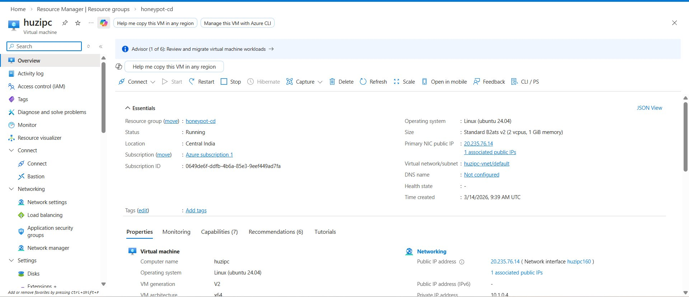
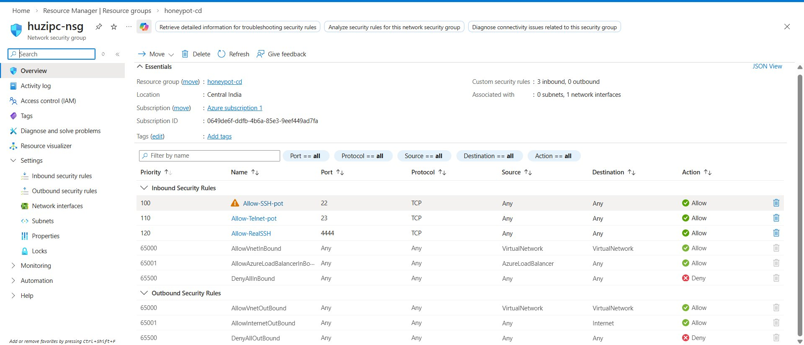
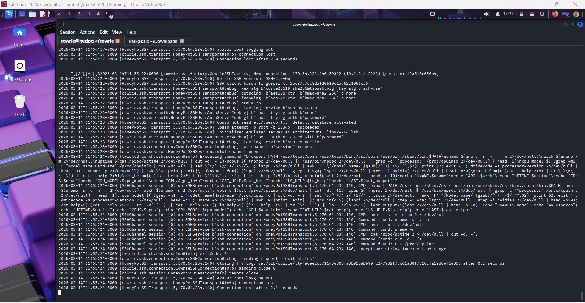
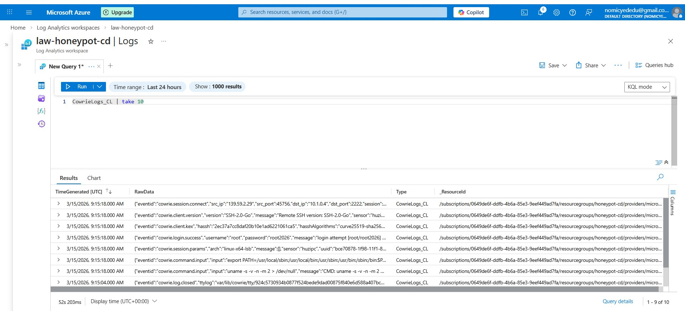
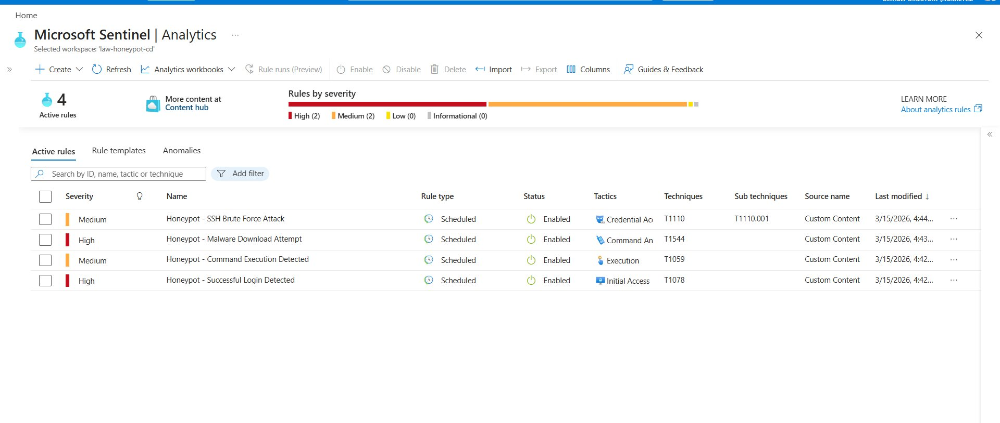
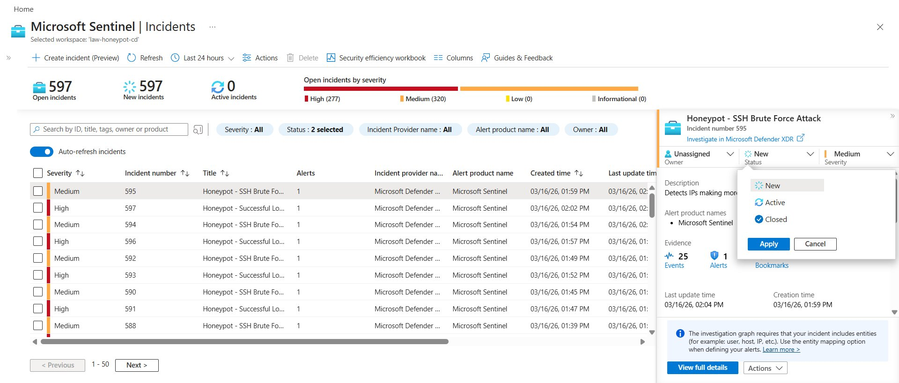
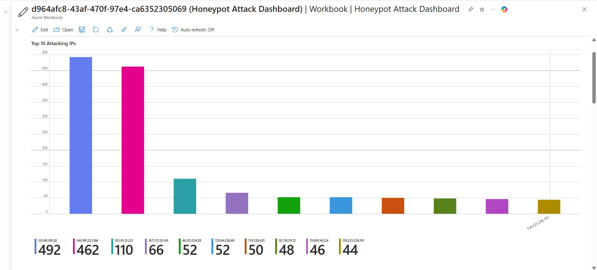
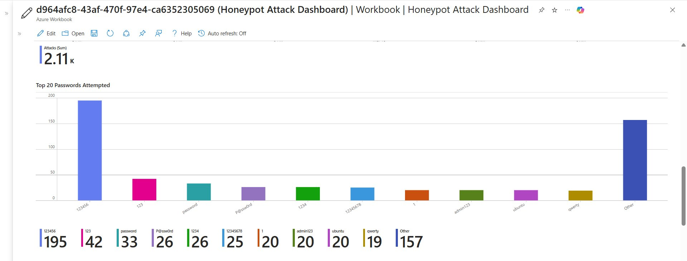
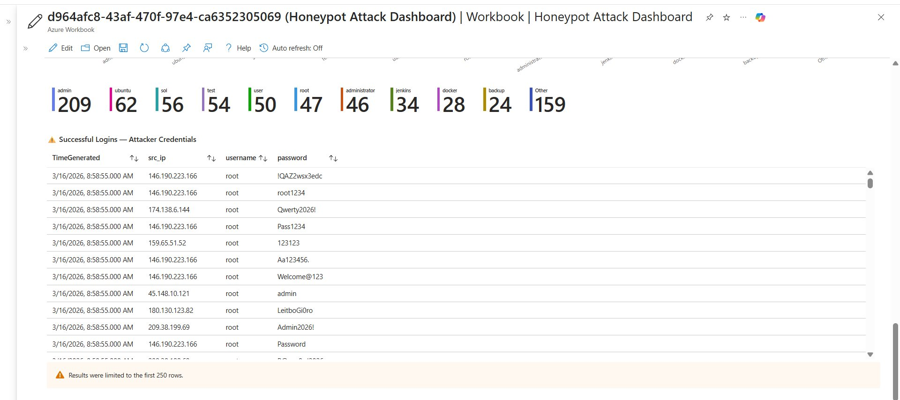

A complete SSH/Telnet honeypot built on Microsoft Azure Free Trial.
Real attackers. Real incidents. Real threat intelligence. Zero dollars.
Four layers working together — from attacker connection to incident alert
The industry standard SSH/Telnet honeypot — trusted by security researchers worldwide
Cowrie emulates a complete Linux environment. Attackers cannot tell it is fake — they see realistic file systems, commands, and responses.
Unlike real SSH, Cowrie lets everyone in on purpose. Attackers think they have access while every command they run is recorded in detail.
Runs as an unprivileged user. Attackers cannot escape the fake shell to reach the real system. Complete isolation guaranteed.
Every keystroke, command, and download attempt is logged in JSON format — perfect for shipping to Azure Log Analytics and querying with KQL.
Complete guide — from zero to live honeypot on Azure Free Trial
Create a container for all resources. This makes cleanup easy — delete the group and everything goes.
Deploy a B1s or B2ats_v2 VM (free eligible). Download the .pem key when prompted — save it safely.
Open ports for attackers and a secret admin port. Never use port 22 for real admin access once Cowrie is running.
Create a dedicated unprivileged user, download Cowrie, set up Python virtual environment.
Set Cowrie to listen on 2222 and 2223 (not 22/23 — Linux blocks privileged ports for non-root users).
Redirect public port 22 to Cowrie's internal port 2222. Save rules permanently so they survive reboots.
Launch the honeypot. Watch live logs to confirm attackers are being captured.
Set up the Azure SIEM stack. Sentinel gives you 31 days free — more than enough to build this.
Create a Data Collection Rule to ship Cowrie's JSON logs to Log Analytics automatically.
Write analytics rules that automatically detect and alert on attack patterns.
Real results from a live deployment — not simulated

Azure VM huzipc — Ubuntu 24.04, Standard B2ats v2, Public IP 20.235.76.14, Status: Running

NSG rules — Port 22 (honeypot), Port 23 (telnet trap), Port 4444 (admin secret door)

Real attacker from 170.64.234.140 logged in with password '12345' and ran system recon commands

CowrieLogs_CL table showing real attack events — login.success, command.input, session.connect

4 active detection rules — SSH Brute Force, Successful Login, Command Execution, Malware Download

597 open incidents — 277 High severity, 320 Medium severity — all auto-detected by Sentinel

Top 10 attacking IPs — 120.48.199.28 made 492 attempts, 146.190.223.166 made 462 attempts

Most attempted passwords — 123456 tried 195 times. Total: 2,110+ attack attempts logged

Attacker credentials captured — sophisticated passwords like Welcome@123 from IPs worldwide
Within hours of deployment — real attackers from around the world
All rules tagged with industry-standard attack technique IDs
| Rule Name | Severity | Tactic | Technique |
|---|---|---|---|
| Honeypot - SSH Brute Force Attack | Medium | Credential Access | T1110.001 |
| Honeypot - Successful Login Detected | High | Initial Access | T1078 |
| Honeypot - Command Execution Detected | Medium | Execution | T1059 |
| Honeypot - Malware Download Attempt | High | Command & Control | T1105 |
// CYBERSECURITY ANALYST
Built this advanced Azure honeypot system as Part 2 of a honeypot series (following a Windows-based honeypot). Deployed entirely on Azure Free Trial with $0 cost — from a complete beginner to catching real attackers in one session. 597 incidents detected. 2,110+ attacks logged. All real.